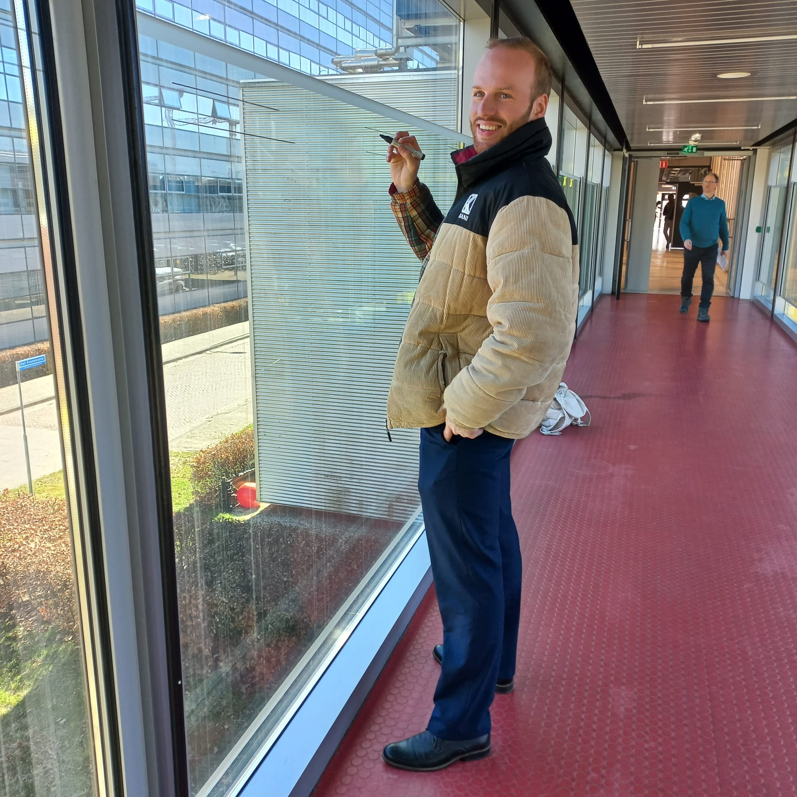

I graduated in Chemical Engineering in Eindhoven, with the focus on chemical process technology. During my studies I developed a real passion for modelling systems. These systems can be related to any field. This website is meant to share this passion with you through some interactive projects.
